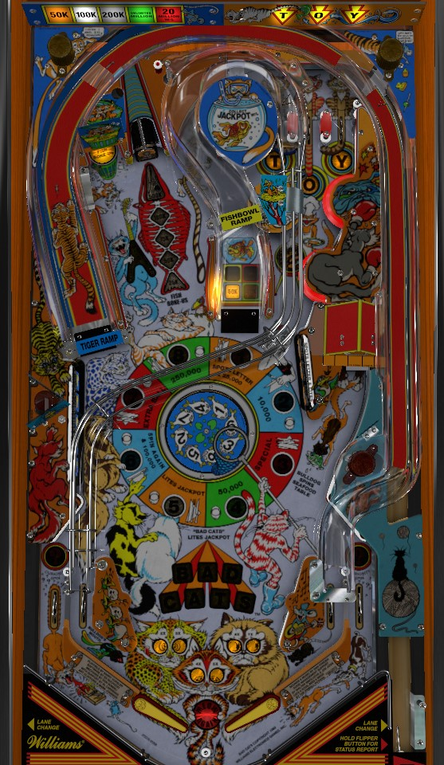

Find the left ramp shot and shoot nothing but the left ramp. If that's not possible for any reason, go for 10x Trash Can collects by shooting the vary-target then the hole next to the vary-target, or work toward the jackpot by completing 7 banks of drop targets or getting lucky at the big wheel.
NOTE FOR TOURNAMENT PLAYERS: Bad Cats is a pretty poor tournament game under factory rules, so many copies of Bad Cats used in competitions install an alternate fan-made ruleset called Cat's Meow. Verify if your tournament is using this modified code in advance, if possible. The last section of this guide discusses changes present in the Cat's Meow ruleset relative to the original game.
One of the T-O-Y lanes is lit for skill shot and cannot be lane changed. Making this lane awards 2x bonus, lights the barbeque, and adds 500,000 points to the jackpot. At any time other than the skill shot, the T-O-Y lanes can be moved with lane change. Completing them advances the bonus multiplier up to a maximum of 7X. Lit in lanes also spot T-O-Y letters.
Score 500 each, or 5,000 when the barbeque is lit. Barbeque is lit by making the skill shot or completing the 3-bank of drop targets.
By default, the center ramp is lit at the start of each ball. If it is not lit, light it by completing the 3-bank of drop targets. Consecutive shots to the ramp score 30,000 - 50,000 - 100,000 - extra ball. If more than about 5 seconds pass between ramp hits, it will reset to being worth 30,000. Only one extra ball per ball in play can be collected here; the extra ball award will simply be skipped subsequent times. Once an extra ball has been collected from this ramp, it will no longer be lit at the beginning of future balls.
The center ramp is also lit for Jackpot after seven total completions of either drop target bank (spelling Bad Cats) or when the Seafood Wheel lands on Light Jackpot.
If extra balls are off, there's not much of a reason to shoot this ramp unless the Jackpot is lit; there are just other ways to get much bigger points in this game. If extra balls are on, though, there's no reason not to try to polish off this ramp to collect one, especially since this ramp is generally a bit easier to loop than the left ramp. This ramp feeds the left in lane.
The Tiger Ramp is typically always on, but if it is turned off via something in the game settings, competing the 5-bank of drop targets lights it. This ramp feeds the right in lane. Looping this ramp awards 50,000 - 100,000 - 200,000 - unlimited millions. There isn't technically a time limit on this ramp, so if the feed comes to a trap on the right flipper, take your time to aim the shot: the value of this ramp is only reset by hitting another switch in the game (except for in lanes or slingshots).
If you can dial in this ramp to consistently get unlimited millions out of it, that's the only thing you should do when playing this game. But wait, it gets even better...
On the last ball of the game, after a 200,000 point ramp is collected, the ramp will be lit for 20,000,000 one time! This is equal to a nearly max value jackpot, and only takes 4 ramp shots to collect. I've never heard of Bad Cats being used as a tournament game- probably for exactly this reason- although I'd imagine if it were, the 20 million would be disabled somehow. If the 20,000,000 isn't disabled, I guess you're never quite out of the game, huh? :)
In the back left of the game is a vary-target that advances the trash can value. How many advances are scored depends on how hard the vary-target was hit; a strong hit can score 3 advances. The values are 25,000 - 50,000 - 75,000 - 100,000 - 500,000. The value automatically goes down one stage every 20-25 seconds. The lit value is collected at the trash can, which is the saucer just left of the vary-target. (The collected value is 10,000 if the fish bone-us is not lit at all.) You may not want to collect it right away, though...
The right in lane, when lit, lights the trash can for 10x value. Always try to get this lit before collecting the trash can value! The trash can collect can be as much as 5,000,000 points. 10x Trash Can collects are probably the best source of points in the game other than the left ramp.
The bird targets are the 5-bank on the left, and the milk targets are the 3-bank on the right. Each target down scores 5,000 points. Completing either bank lights a letter in Bad Cats in the center of the table: finishing Bad Cats lights the center ramp for jackpot.
The 5-bank scores 100,000 points when completed and lights the left ramp if it is not already lit. The 3-bank scores 60,000 points when completed and lights the center ramp and barbeque if they are not already lit.
Shooting the unlit doghouse lights the doghouse and scores 5,000 points. Going through a lit left in lane will also light the doghouse. The doghouse only stays lit for about 15 seconds.
Shooting into the doghouse when it's lit spins the Seafood Wheel, which can give any of the following awards:
The Wheel does not have an equal opportunity of landing on any award. The Special, Light Jackpot, and Extra Ball awards can have their probabilities set by the settings within the game. I believe the probability of the other 5 awards is evenly distributed, though.
The Jackpot builds and carries over from ball to ball, player to player, and game to game. It starts at 1,000,000, and returns to that value once collected. Ramp shots, completed drop target banks, and trash can collects all raise the jackpot value by between 5,000 and 25,000 each. Successful skill shots raise the jackpot by 500,000. The backglass art implies that the jackpot maximum is 8,000,000, but the actual max is 21,000,000; if the jackpot ever exceeds 21 million, it will be lowered by 1 million to stay between 20,000,000 and 21,000,000.
Jackpot is lit by collecting the corresponding Seafood Wheel award or by spelling Bad Cats by completing a total of 7 drop target banks. Progress on Bad Cats letters, as well as the actual lit jackpot, carry over from ball to ball by default.
Bad Cats has a conventional in/out lane setup with a center peg between the flippers. One in lane at a time is always lit, they alternate with slingshots. The left in lane lights the doghouse for 20 seconds when lit. The right in lane lights 10x Trash Can when lit. In lanes score 20,000 when not lit or 50,000 when lit. Any lit in lane also spots a letter in the T-O-Y top lanes.
The out lanes score 100,000 points. On the last ball of the game, they are lit for Curiosity Spin, which gives a free Seafood Wheel spin when the ball enters the trough. This is a modified Seafood Wheel spin, that is far more likely than normal to give an extra ball and cannot land on Light Jackpot.
Most everything on the table awards bonus advances. I believe bonus advances follow these rules:
The current end of ball bonus can be seen via the Cat Scan status report if both flippers are held for long enough. If there is a maximum base bonus, it is at least 150,000. Bonus is usually not a major part of scoring.
Bonus multipliers are awarded by completing T-O-Y. Maximum bonus multiplier is 7X, shown by how many cat's eyes are lit on the bottom of the playfield. Neither multipliers nor base bonus can be carried from ball to ball.
The center ramp, doghouse, and trash can value can all have their timers changed.
Bad Cats letters and lit jackpot can be set not to carry over from ball to ball.
"Cat's Meow" is a fanmade version of the Bad Cats ruleset that makes it a more dynamic and all-around better competitive game. It has begun to be installed on many copies of Bad Cats used in tournament play. Rules differences in the Cat's Meow rules include the following:
This list may not be exhaustive. If something is missing or incorrect, please let email pinballprimer@gmail.com to let us know.